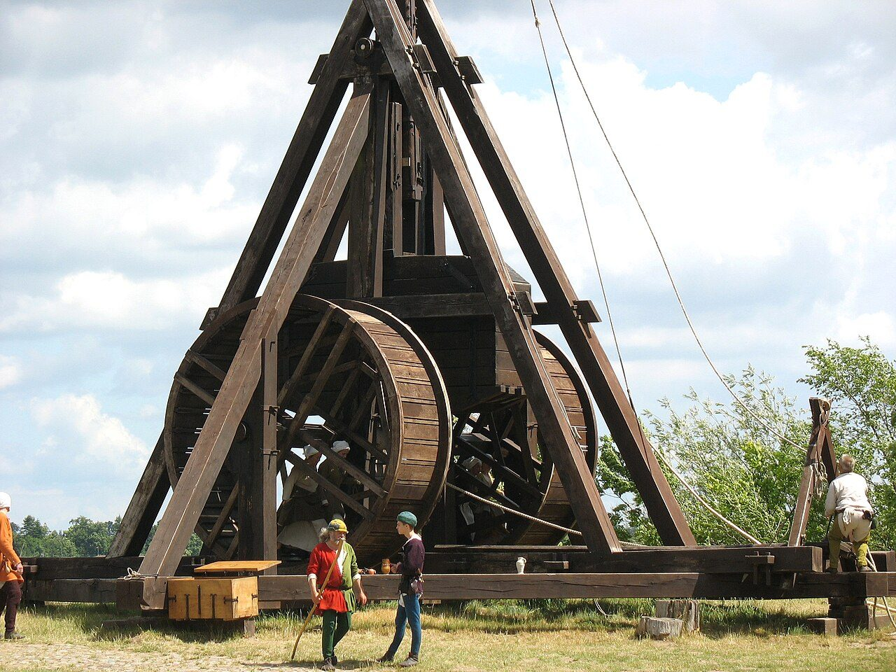
Created by Dilan Singh
The Greatest Siege Engine
How far could the best possible stone-thrower reach, and could it have broken a city wall? This site puts the question to the trebuchet, the beam-and-sling engine of the Middle Ages, and ends at Jerusalem in 1187.
A physics model of the throw, checked against measured machines, designs two trebuchets: the best that modern materials allow and the best that Saladin’s army could have built. Real reconstructions are measured against both, and the 1187 machine is set before the wall the sappers broke. Everything you can tap on this page opens to its source, and every number can show its working.
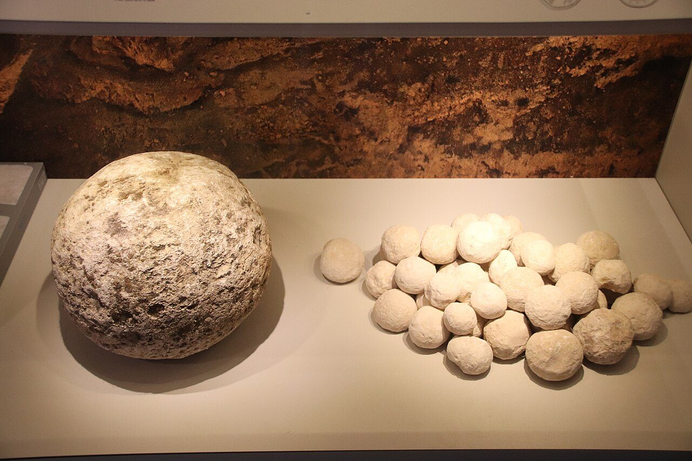
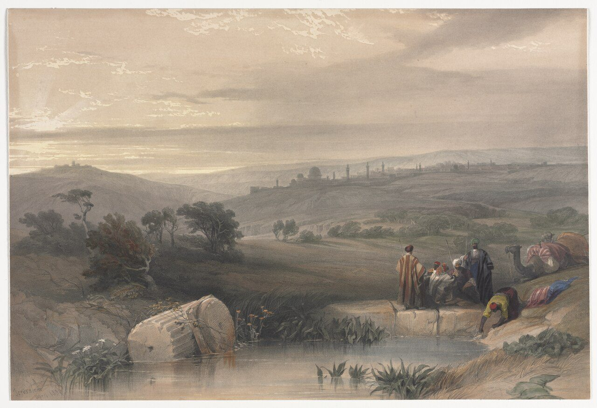
The son cometh
In AD 70 the Roman army of Titus camped about two stades from the outermost wall of Jerusalem. Every legion had engines, but those of the tenth legion, Josephus wrote, were larger than the rest. Their stones weighed a talent and carried two furlongs and further: about 26 kg, at least 370 m.
The stones were white. Watchmen on the towers saw them coming and cried “The son cometh”, and anyone in the path threw himself flat. The Romans blackened their stones.
The ground tells a smaller story. At the Russian Compound, just outside this wall, excavators found 79 ballista stones. Most weigh up to 5 kg, some up to 11 kg, and one weighs 24 kg. One stone in 79 came near a talent.
Josephus wrote what he wrote, not what anyone measured. So how far could an engine like these throw, and how hard could its stone hit? Could it break the wall?
Josephus’s figure is two stades, about 370 m, for a stone of about 26 kg. In our model a stone of that weight needs at least 55 kJ at launch to fly 370 m through the air, and lands with about 41 kJ, which is about the energy of the best engine of 1187 (stop 9). Rome’s numbers are reports. The 24 kg stone in the ground is the only one close to them.
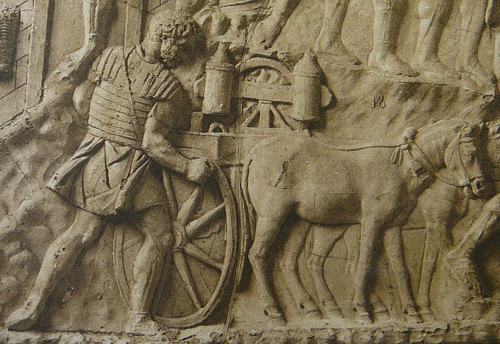
Spring hole 0.39 m across. The hole grows with the cube root of the stone’s weight, and so does every other part of the engine. A spring’s stored energy grows with the cube of its diameter too, so each kilogram of stone gets the same share of energy whatever the size: the rule buys weight, not distance.
Before the trebuchet
Sulla needed timber. In 86 BC his army was besieging Athens, and Appian says he cut down the grove of the Academy to build his largest engines. Plutarch adds the Lyceum, and reports that working the engines took ten thousand pairs of mules a day, a suspiciously round number.
Those engines belonged to a tradition three centuries old. Diodorus wrote that the catapult was invented at Syracuse, where Dionysius I gathered craftsmen for war with Carthage, about 400 BC. Their power came from springs of twisted sinew. Greek engineers learned to size them by arithmetic, so that an engine for a heavier stone was the same engine scaled up.
What they could do to a wall is another matter. Erwin Schramm’s reconstructions, shown to the Kaiser at Metz in 1904, threw lead balls of about 0.5 and 2 kg some 300 m. Philo of Byzantium himself judged that torsion engines could do walls little harm at 160 m. Torsion stone-throwers were still on the walls of Rome in AD 537, and within sixty years a machine with no spring at all was hurling stones at Thessalonica.
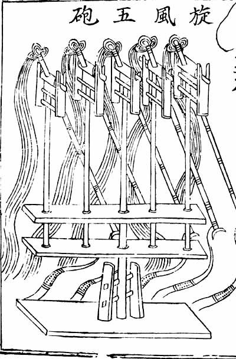
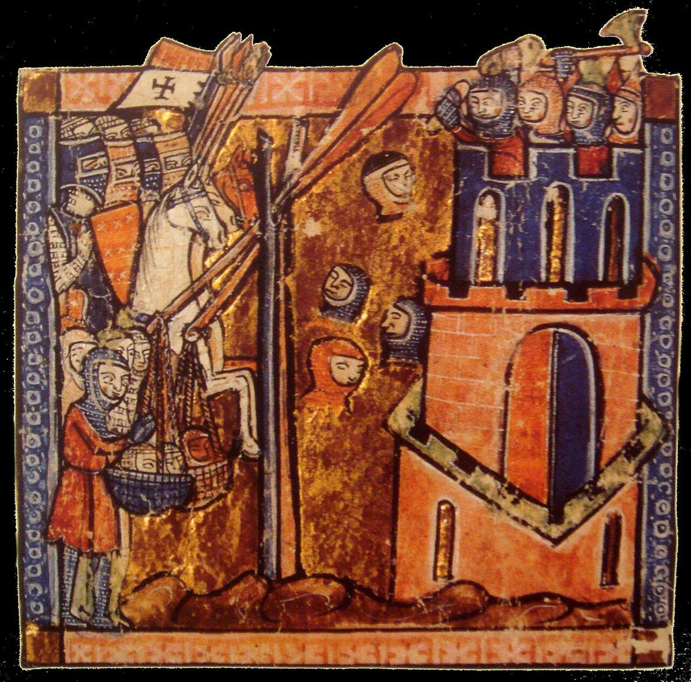
From China to Jerusalem
Some time in the late sixth century an army of Avars and Slavs camped outside Thessalonica, and the city’s bishop described their engines: four-sided frames carrying beams “like the beams of a large house”, and these had slings. This was the traction trebuchet, pulled by a crew hauling on ropes, which arose in China between the fifth and third centuries BC. Crews of as many as 250 are reported, sending stones 100 m or more.
When a falling weight replaced the crew is disputed. George Dennis reads a winch at Zevgminon in 1165 as the first clear reference to a counterweight machine, and Michael Fulton puts its appearance in the last two decades of the twelfth century. The earliest known drawing of one is in a treatise written for Saladin, dated to about 1180 or 1187. No source read for this project says counterweight engines were used at Jerusalem in 1187, so Saladin’s machines are called mangonels here, as the chronicles call them.
Over the next century the engines grew. At Xiangyang in 1273 an engine built by a Muslim engineer for Kublai Khan threw a stone of 150 jin that sank seven chi into the ground, the official Yuan history says. At Acre in 1291 one dismantled Mamluk engine filled a hundred carts.
The Jerusalem 1187 design throwing its 20 kg stone, drawn to scale from model run P7-R12. The bar shows where the counterweight’s 96 kJ is at each moment. Image created by Claude.
How a throw works
A throw has four stages. The stone slides along a trough while the arm begins to turn, then lifts off and swings out in the sling, which whips it round faster than the arm turns. The counterweight, free on its hinge, falls almost straight down. Release comes when a ring on the sling’s free end slides off a prong at the arm’s tip. Then the stone flies, slowed by the air.
We score a throw by its efficiency: the stone’s energy at release divided by the energy the counterweight can give up. For the 1187 design that is 0.75. Whatever the stone does not carry away stays in the swinging machine; bearings and air take only about 4%.
Size needs a fair score too. Built to the same proportions, a trebuchet twice the size throws twice as far in a vacuum, so we judge a machine by its range divided by its beam’s length, R*. Strength does not scale, so materials are sized at one reference size: a 10 m beam and a 20 kg stone.
Beam 7.34 m, counterweight 19.1 t, stone 100 kg: 450 m with no air, and R* stays 61.3. With air it moves only from 52 to 56.
Meet the machines
A siege engine was a building before it was a weapon. Villard de Honnecourt’s sketchbook of about 1230 gives a trebuchet’s base frame and, for its counterweight, a chest of earth about 3.9 by 2.9 by 3.9 m. Al-Ṭarsūsī preferred cherry for the beam, and held that a beam flexible “but not excessively so” throws farther. Edward I’s men greased the axle with lard.
Excavation says what they threw. Eight shots found outside Kenilworth Castle, from the siege of 1266, weigh from 1 to 105 kg. Of 2,747 stones from the Mamluk siege of Arsuf in 1265, 800 were weighed, and most came to 8 to 48 kg; the heaviest reached 78 kg. They could be aimed. At Vincennes in 1850 no shot strayed 3 m sideways, and three shots from Tanel Saimre’s machine at Otepää landed within 2 m of each other.
Below are the machines this project could put numbers to, old and new. Where a machine has enough published geometry to run, a button loads it into the Proving Ground.
Watch one fire
A real throw takes ten seconds and says more than a page. Press play and the clip runs here; the title opens it on YouTube.
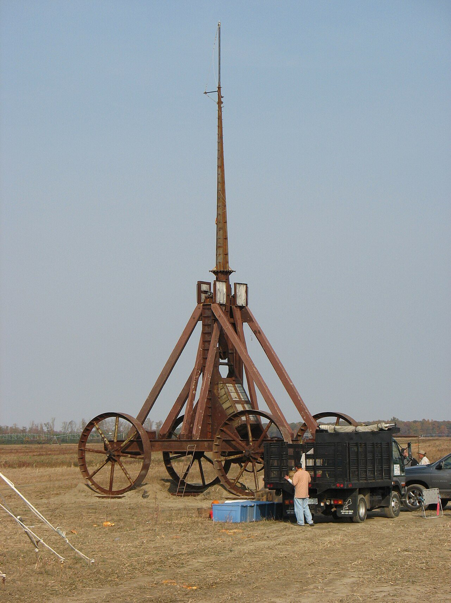
Yankee Siege, Greenfield, New Hampshire The pumpkin thrower of the dentist’s story. Philip Duldulao on YouTube. Still: a trebuchet at the 2008 Punkin Chunkin, Delaware. GB fan, CC BY-SA 3.0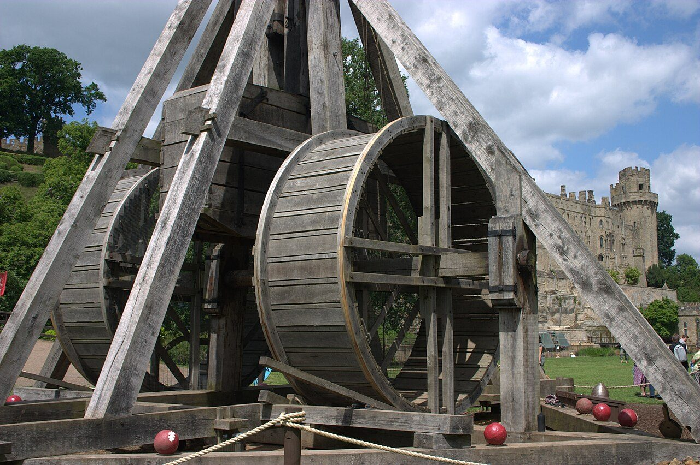
Firing Warwick Castle’s new trebuchet, 2023 The 2023 copy of the 18 m machine. Paul Cole on YouTube. Still: Pahcal123, CC BY-SA 4.0To read on: the Medieval Centre’s page on its trebuchet and NOVA’s Medieval Siege companion site, whose team built the Urquhart Castle machines.
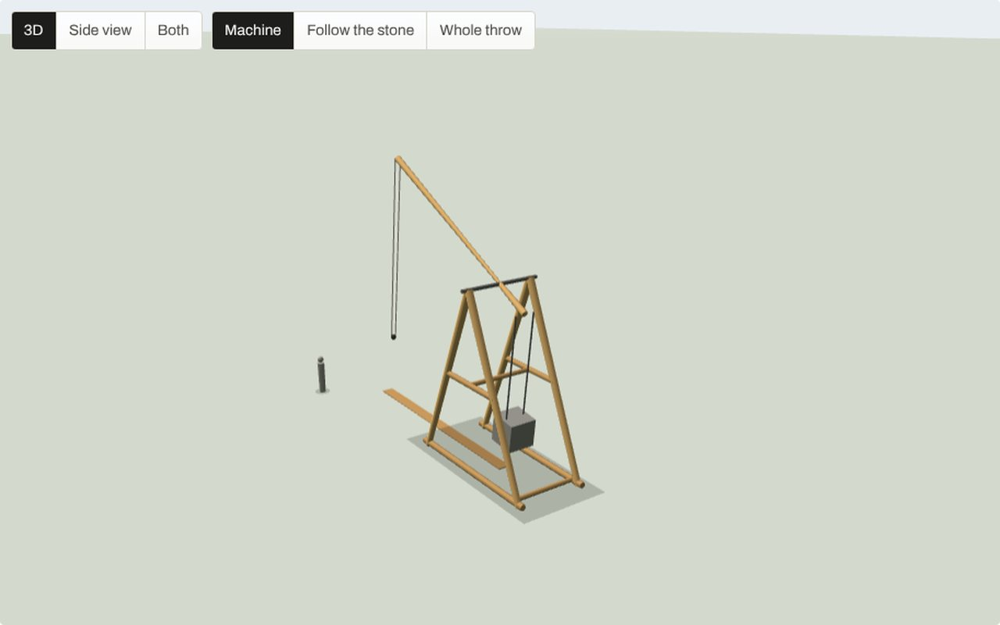
The Proving Ground runs the same equations as the model behind every number here, cross-checked against it on 52 machines to within a millionth of a per cent in range. Built with Claude.
The Proving Ground
Change a part and watch the throw change. The simple mode gives you six things to move: the counterweight, the stone, the arm, the sling, the frame height and the release. The engineer mode behind it opens every one of the model’s 76 inputs, with readouts for range, efficiency, release speed and the loads on the axle, hinge and sling.
Presets load the two designs, the Jerusalem 1187 settings and the real machines of stop 5. The throw plays in three dimensions, and the side view stays beside it for reading numbers.
The two designs at the same scale, cocked for the throw, from model run P7-R12. Both have a 10 m beam and an axle about 7.4 m up. Image created by Claude.
In modern materials the floating arm wins clearly, 885 m against 747 m for the best wheeled machine. It needs steel guides and a rail, so for 1187 the choice lies between a hinged counterweight at 579 m and a fixed weight on a rolling frame at 586 m. The rolling frame’s small lead rests on a rolling resistance we had to assume, so the 1187 design keeps a hinged weight on a fixed frame.
The best trebuchet
Every design is built at one reference size: a 10 m beam, inside the 8 to 12 m that Viollet-le-Duc gives, a 20 kg stone, one of the commonest weights at Arsuf, and a counterweight of 3,000 kg, 150 times the stone. Each layout, bearing, timber and sling was re-optimised on its own terms before it was compared, with the beam sized to survive its own throw.
The beam decides more than anything else. A uniform ash beam strong enough for its loads weighs 321 kg, and the machine throws 455 m. Tapered to half its depth at the tip it weighs 241 kg and throws 580 m, 27% farther, because every kilogram of beam has to be swung up to speed with the stone. Carbon fibre does the same work with 99 kg and reaches 885 m.
No magic ratio comes out of the search. The best period machine sits where four limits meet: the hanger as long as the ground allows, the frame as tall as we allow, the hinge pin at the 5 tonne load we set, and the beam at its design stress. A taller frame would always help. Range keeps rising with the counterweight too, so the ratio of 150 rests on precedent and logistics rather than on a peak.
Heavier stones fly shorter, and past about 40 kg the energy they strike with barely grows, because the machine can no longer bring a heavier stone up to speed. A besieger who wanted weight paid in distance.
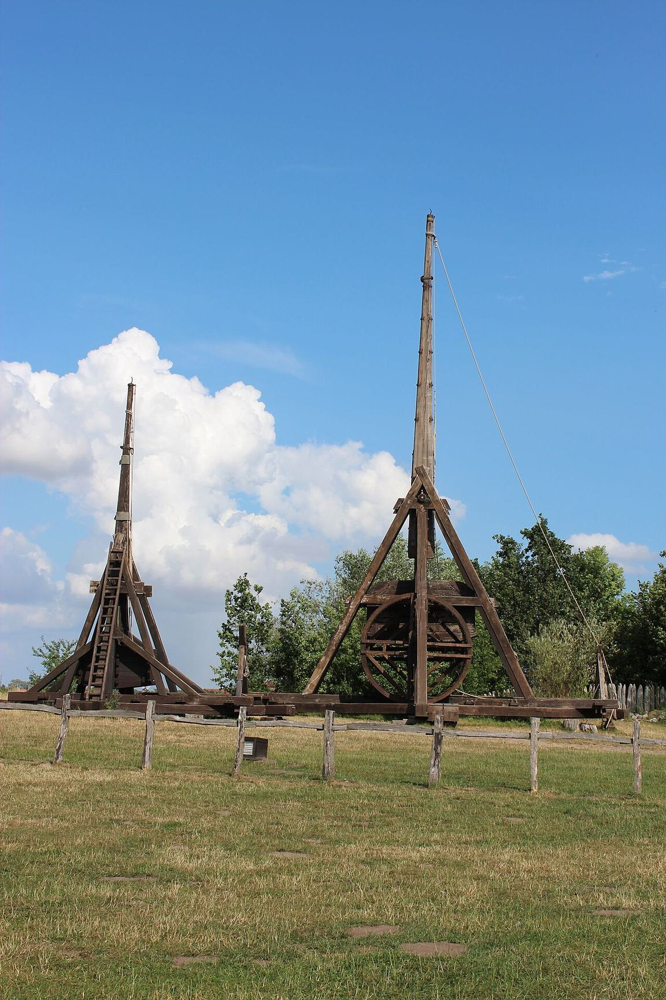
Right proportions, wrong frame
Tanel Saimre measured Hansen’s Danish trebuchet from its published blueprint and found its axle “only 3.15 m” off the ground. Raising it by one metre, he calculated, would add 17% to its range. Our model gives 18%. Two independent calculations point to the frame.
As reported, the two reconstructions built to medieval patterns, Hansen’s at Nykøbing and one at Varbola in Estonia, scored an R* of 24 and 16: only 41% and 28% of the 1187 design’s 58.0. Walk the Danish machine to the optimum one change at a time and the gap goes two places: an ash beam sized to its loads adds 16.4 to its score, raising the frame adds 14.3, and re-proportioning the machine for its own frame adds only 1.5. The builders had the proportions nearly right for the frame they had.
The sources do not say why they kept frames low and beams heavy. Our inference is that a tall frame needs long timbers and stands less steadily, while a heavy beam rarely breaks: Favé’s frame at Vincennes failed after four shots, and Hansen’s fired about 120 “nearly flawlessly”. The larger reason, we think, is purpose. Builders wanted heavy shot, and a heavy stone flies short.
Scores are R* at the reference scale from model run P8-R04, with the unweighed Danish beam taken as a fifth of its counterweight. Each step re-optimises the machine with the new feature.
Model runs P8-R05 and P8-R06: 200 simulated shots per setting, aimed 8 m up an 11 m face, no wind. The wall section is the working value for the main wall, with the forewall and moat measured by Weksler-Bdolah. Image created by Claude.
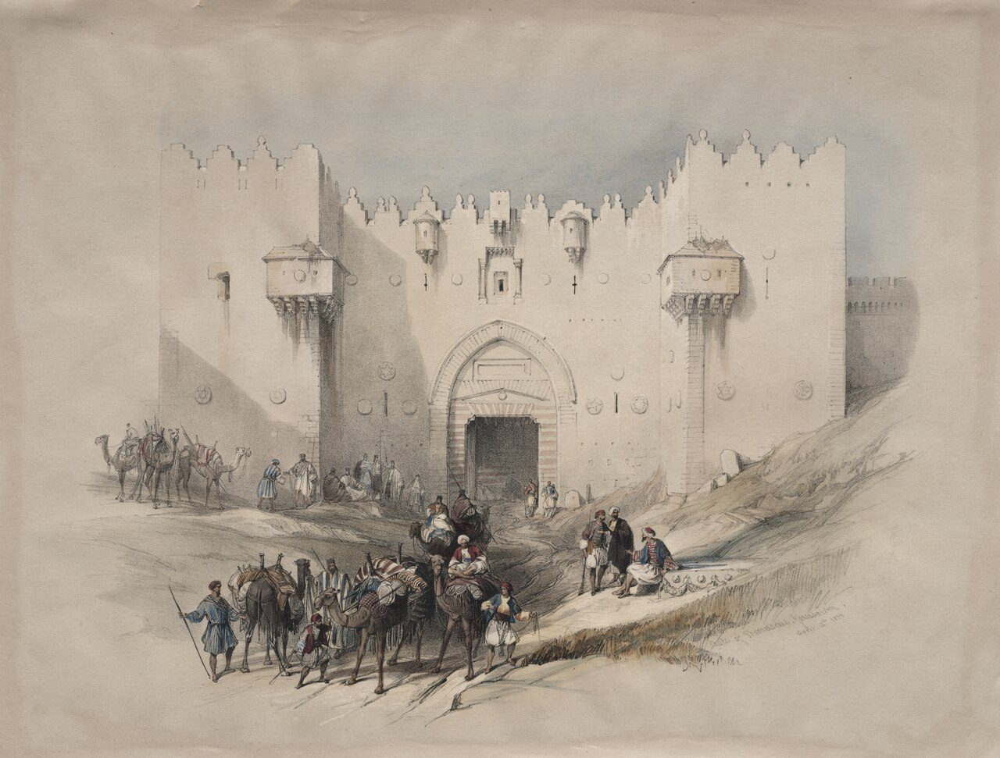
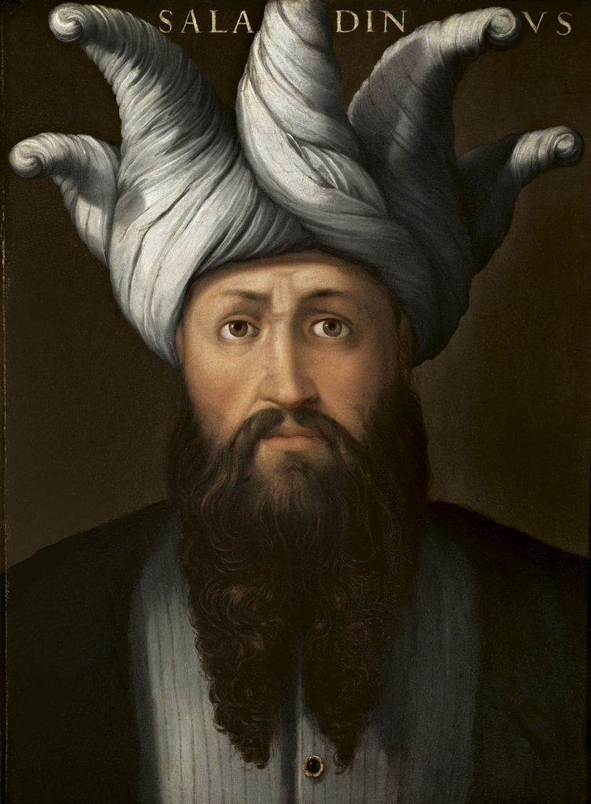
Jerusalem, 1187
On Friday 25 September 1187 Saladin’s mangonels went up against the north-east angle of the city, installed in the night and working by morning. A Latin eyewitness saw olive branches piled between the city and the engines, and behind them “the Turks unceasingly hurled rocks forcefully against the ramparts”.
In the Arabic accounts the mangonels destroyed the tops of the towers and drove the defenders from their posts, and in two days the sappers opened a breach about 30 m long. The city surrendered on 2 October, twelve days after the siege began. Every account credits the breach to the sappers, and none gives the size of an engine or the weight of a stone. To ask what artillery could have done at this wall, we have to bring our own.
On the north the attackers faced a rock-cut moat 14 to 20 m wide and a forewall 3.2 to 4.5 m thick, 8 to 10 m in front of the main wall. The main wall is unmeasured, so we take it as 11 m high and 2.5 m thick, like the walls Pisa built in the same century. No source says how far back the engines stood; we take 70 to 150 m. The defenders’ longest shot is taken as the 421 m that Ralph Payne-Gallwey reached with a later steel siege crossbow.
From beyond the crossbows the 1187 design still throws a 32 kg stone that strikes with 60 kJ, but it mostly misses: only 27 to 30% of long shots hit the 11 m face. From the stand-off it throws 108 kg to 98 m and hits 68% of the time with 68 kJ. At Hansen’s pace of a shot every ten minutes, a twelve-hour day puts 50 to 70 stones on the face, each with about a tenth of a cannon ball’s energy.
Could it have broken the wall? Probably not on its own, and not in twelve days. It would have wrecked the tower tops from beyond the crossbows and covered the sappers, doing the mangonels’ work faster and from safety. Our confidence is low to medium, because the wall and the stand-off are estimates and no one has tested how impact energy turns into a breach.
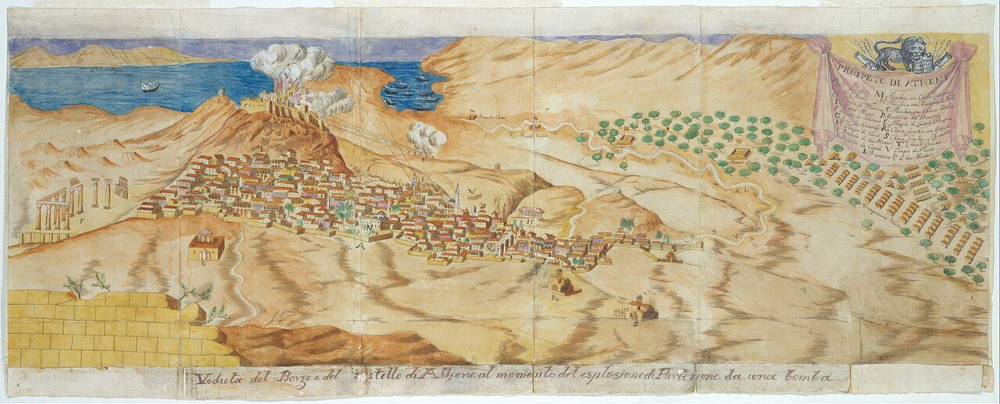
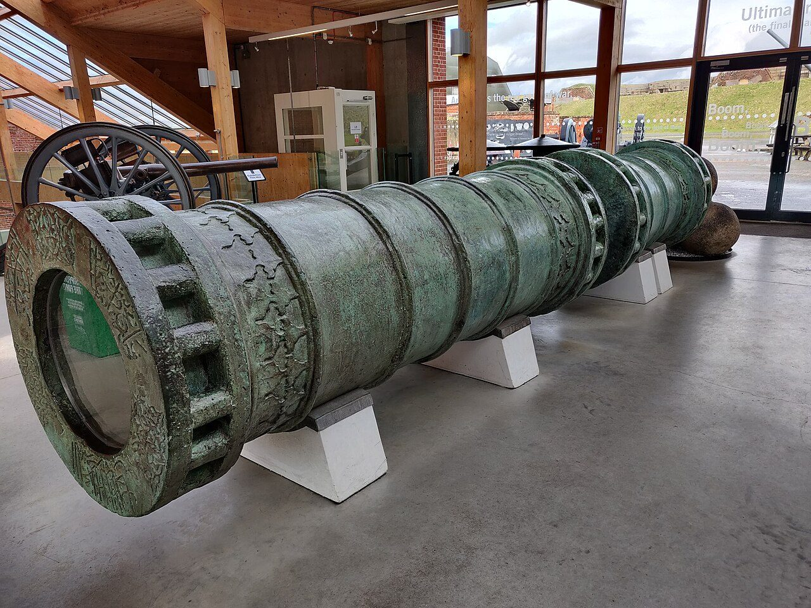
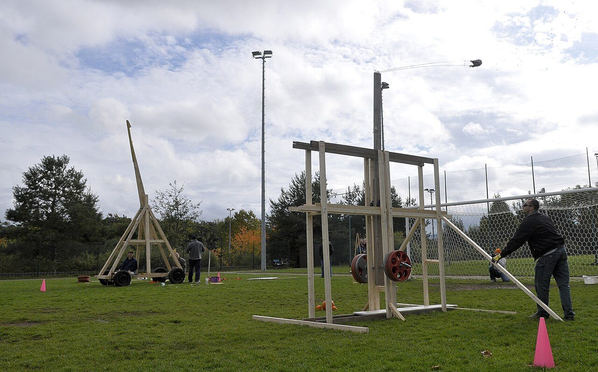
After the trebuchet
On the night of 26 September 1687 a Venetian bomb passed through the roof of the Parthenon, where the Ottoman garrison had stored its powder, and set it off. About 300 men died and three-fifths of the frieze came down. Morosini called it “a fortunate shot”.
Guns had long since replaced the trebuchet, in a change that took nearly two centuries. In 1453 Orban’s great gun, firing a granite ball of about 600 kg in a modern reconstruction, helped breach Constantinople’s land wall. At Tenochtitlán in 1521, with ammunition low, the Spaniards built a trebuchet whose first stone went wrong. Gibraltar in 1779 is the last reported use.
Then it came back as a hobby. Yankee Siege II, a pumpkin thrower from New Hampshire, holds a trebuchet record of 864 m, and the competition record of 1,029 m was set in 2019 by Colossal Thunder with a pumpkin of 3.6 to 4.5 kg. A pumpkin is not a stone, and none of these distances can be set beside a medieval engine’s.
A 20 kg shot from the 1187 design strikes with about the energy Josephus’s talent implies, more than twenty times a measured traction throw and a fourteenth of a cannon ball. It was gunpowder that forced builders to thicken their walls.
In short
The best trebuchet that physics and modern materials allow is a floating arm, which in our model throws a 20 kg stone 885 m from a 10 m beam. In the materials of 1187 the best is a tall hinged machine with a tapered ash beam that throws the same stone 580 m, about 500 m allowing for the model’s optimism, and strikes with about the energy Josephus’s talent implies, a fourteenth of a cannon ball’s. The builders of history got the proportions nearly right for frames that were too low, and they lacked a light, strong beam. Mostly they wanted heavy stones more than distance. At Jerusalem the best machine they could have built would have ruled the top of the wall without breaking it. The sappers would still have made the breach.